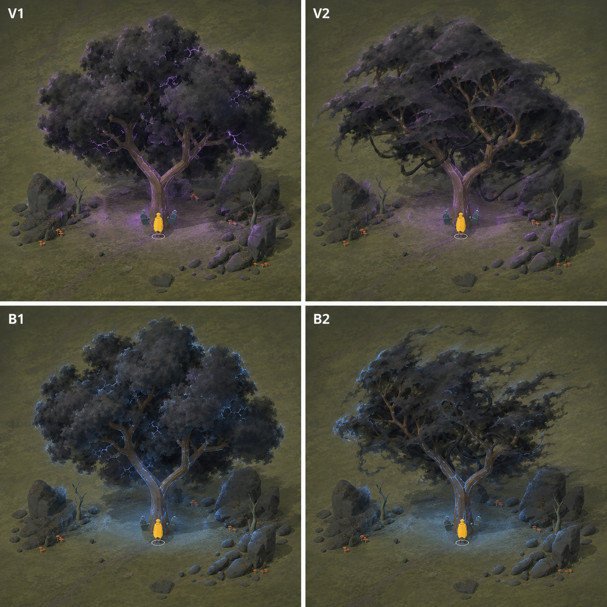
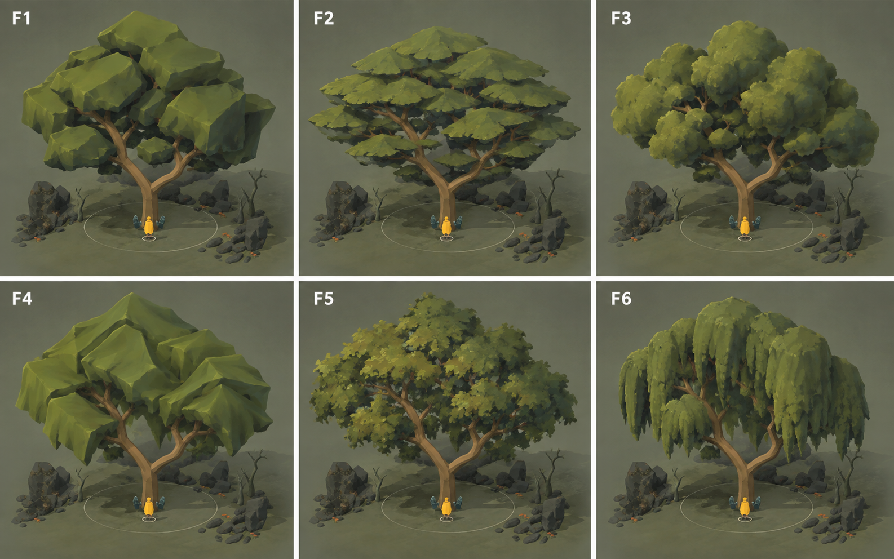
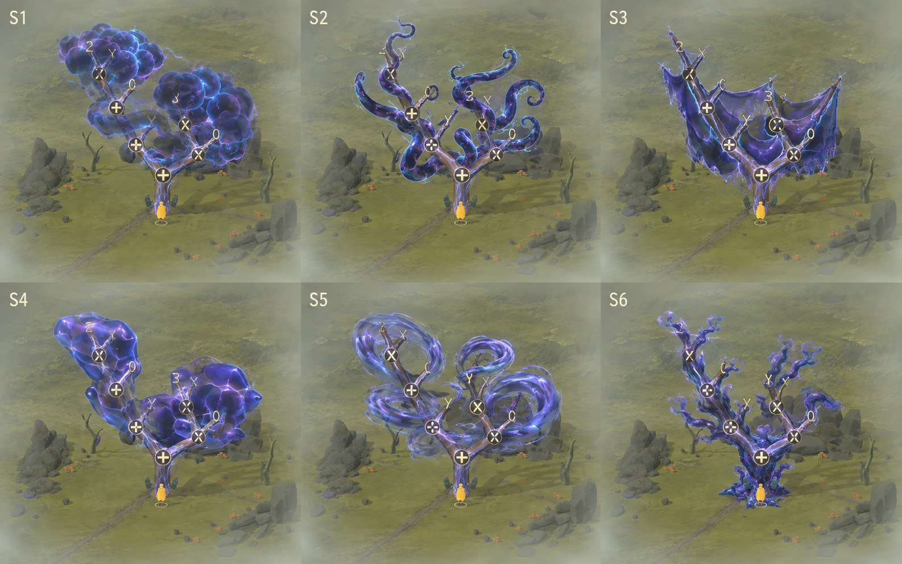
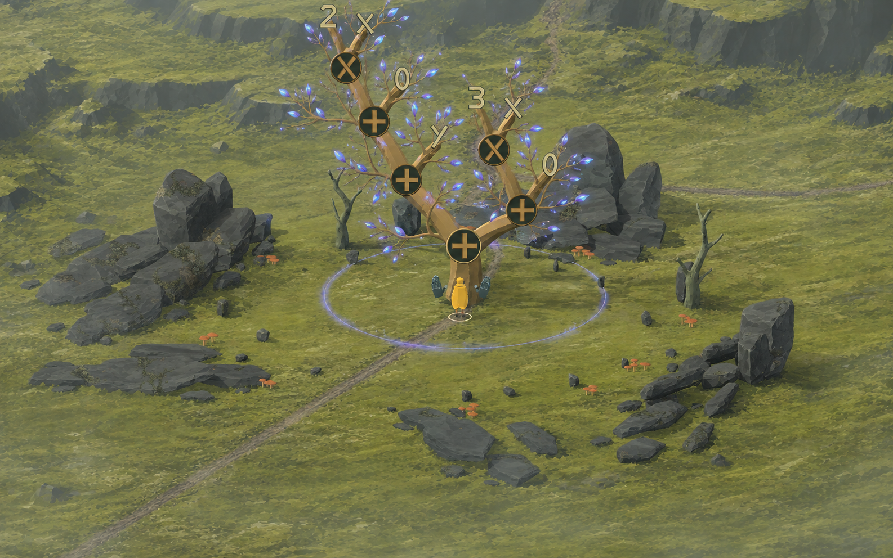
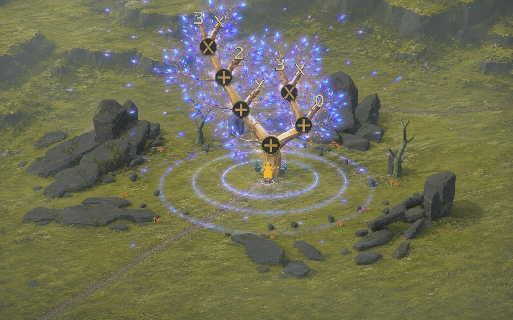

Inhabited trees
A living tree hosts an unsettled expression. Simplification gathers its energy; release gives the tree room to grow again.
Round 03 · canopy workshop & shadow foliage concepts
Round 03 · Living volume, shadow foliage
Open the interactive 3D canopy workshop →
F5 is the primary direction. The workshop compares F1, F2, F3, F5 and F6 on the same host, with orbit controls, canopy density/size, seeded variation, spatial spread, wind and real expression-layout motion examples. F4 is excluded following your feedback.
The first F5 implementation uses textured leaf-cluster surfaces with shaped normals over a subdued solid interior. It demonstrates a rendering route, rather than matching the painted concept yet. Open “Concept & method” in the workshop to compare it against the reference. Violet/blue local-light controls illuminate actual 3D rock and ground surfaces.
Shadow foliage · four new concepts

V1 · Violet storm crownDense dark foliage, faint edge shimmer and internal arcs. More storm-like; the arcs may still be too prominent.
V2 · Violet layered shadeA partially draping crown, with secondary dark tendrils inside the branches. A quieter silhouette.
B1 · Blue storm crownComparable dark canopy with cold blue edges and local light spill. No violet-blue blend.
B2 · Blue wind-scoured shadeOpen branches and dark foliage breaking into wisps. Less dense and more swept by the wind.
These are new candidates, not selected designs. The original S4 and S6 are rejected; S1/S2/S3 supply only selected ingredients. Keep tendrils secondary and matte, avoid glossy tentacles and spherical cloud lumps. The light spill shown in this painting is conceptual; the separate workshop tests real point lighting. No shadow canopy or release sequence has been added to 018.
Built-in image generation · Exact prompt · Provenance · 3D method, sources and limitations
Round 02 · Earlier alternatives
The earlier spectral leaves were too small and shard-like, and the recovered crown too sparse. These alternatives explore larger collective forms. Each label identifies a separate design, not a step in a transformation. Select either sheet to inspect it at full resolution.
F · Living canopy

F1 · Cut massesBroad faceted green volumes echo the hewn wood. Strongest solid-body reading; could become too rock-like.
F2 · Layered shelvesOverlapping canopy tiers give density while preserving windows into the branching structure.
F3 · Rounded clustersA fuller conventional crown. Paint and silhouette detail break up the larger solid lobes.
F4 · Folded membranesLarge pleated surfaces form a continuous crown. More abstract; could read as cloth or folded paper.
F5 · Textured clustersAn aggregate leaf-texture direction for comparison with solid geometry. The painting suggests the look; it does not demonstrate a working card technique.
F6 · Hanging curtainsLong collective foliage forms, with a heavier draping silhouette. More willow-like than the other candidates.
S · Inhabiting presence

S1 · Storm mantleRolling dark energy volumes, with lit edges and internal turbulence. Substantial, but risks obscuring the tree.
S2 · Tendril bodyThick curling extensions follow and exceed the woody limbs. Strong motion potential; an intentionally creature-like extreme.
S3 · Folded shroudConnected membranes span branches. Clear large shapes, though this candidate reads very literally as hanging fabric.
S4 · Liquid crystalContiguous flowing masses with broad angular shoulders. The crystal idea is in the surface, rather than separate spikes.
S5 · Current wreathsCoherent circulating ribbons leave more of the wood exposed. Direction of flow could make the pulse legible.
S6 · Cloaked woodShimmer and growing sheaths concentrate on the wood itself. This sheet adds quite busy ruffles; the surface treatment can be used more quietly.
Separate choices: bark shimmer, the larger spirit body, and the recovered crown do not have to be one preset. For example, S6's surface treatment could sit beneath S1's masses or S5's currents. F1/F2 are useful starting points for a dense geometric crown; none is selected yet.
Both sheets use the actual 018 screenshot as a camera/material reference, with more crown margin. Branch layouts, glyphs and terrain vary in generation: these compare graphical constructions, not exact rewrite states. No live scene changes. Built-in image generation · Foliage prompt · Spirit prompt · Provenance
Round 01 · Earlier encounter sequence
Retained for reference. The arrival/concentration leaf treatment and sparse recovered foliage below are superseded as visual targets by the request for broader exploration above. Release and recovery timing remain useful concepts.

One tree, two structures
The host: hewn limbs, small twig systems, bark and living leaves. The inhabitant: the expression, its sigils and spectral leaf energy. For the first version, the expression still follows the major limbs; the new twiglets have no algebraic meaning.
As a branch moves, its twiglets and attached leaves travel with it. Their local attachment coordinates should survive deformation; we should not randomly regenerate the foliage every frame. A later version can map expression edges onto paths through a richer host tree.
Recovery restores biological complexity, not the old expression. The result remains 5x + y even when the host grows many more branches. Whether that result stays visible as a quiet spirit or departs is still open; these images explore departure.
The motion between these frames
| Moment | Proposed treatment |
|---|---|
| Arrival | Small coherent sway; individual leaf membranes flutter with phase offsets. |
| Concentration | Energy gathers into a smaller structure. Stronger leaf pulses and low outward ripples; the traveller braces. |
| Release | One expanding refractive front, with leaves lifting free. Solid wood stays behind. |
| First leaves | A short quiet pause, then sparse curled green leaves open on the small scaffold. |
| Recovery | Several seconds of branch extension and leaf unfurling, lighter bark, a slower sway. |
Rhythm without a compulsory beat
A tentative sound direction: a sparse 80–90 BPM electronic pulse, soft wooden/plucked attacks and a low breathing tone. Add harmonics and rhythmic detail as energy concentrates; keep the tempo steady. Release opens into a long, airy decay; growth brings back small leaf and wood sounds.
The pulse can drive sway, leaf phases and ring breathing from one clock. Catch feedback must still happen immediately when the player completes a gesture. Nothing should require waiting for a beat. This is a sound brief; no music or sound assets have been generated yet.
What the first playable 019 should test
- Fine branches that remain attached throughout every rewrite.
- Distinct spectral and living leaf materials on the same small branch systems.
- Energy increasing as the goal approaches, without overwhelming sigils or hands.
- A one-time release and recovery sequence driven by the existing goal predicate.
- Body bracing as a visual response first. Actual knockback remains a separate interaction choice.
Rewrites, physical growth, spirit intensity and encounter radius need separate state. Node count alone is not a universal measure of progress: some valid solutions temporarily expand an expression.
Rejected concentration draft · why it is excluded
Supplying both a reduced screenshot and the arrival concept caused the model to copy the old topology and reintroduce removed nodes. Retained for provenance only. The corrected concept uses a single screenshot input.

All five candidates were made with the built-in image-generation tool. Exact prompt for this image · Full generation provenance · Actual reduction states. The source frames were captured by performing six legal rewrites in 018. Its gameplay and your live settings are unchanged.